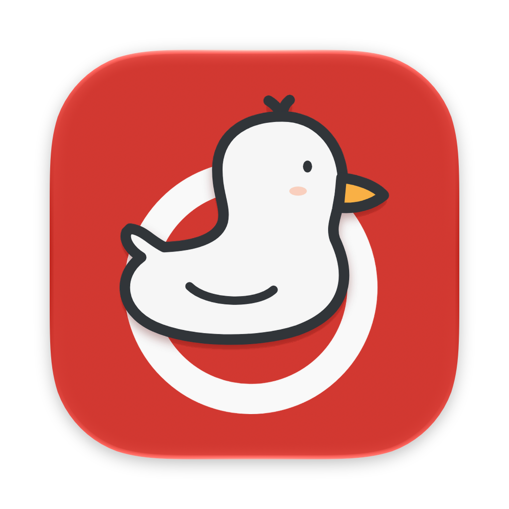

网易云 × Spotify 双持的人
网易云负责推歌
Spotify 负责放
舍不得网易云的每日推荐，
家里的音箱、车上又只认 Spotify



DuckEase Music
Mac 上的开源网易云客户端 · 歌单能和 Spotify 互通
非官方客户端，与网易云音乐、Spotify 无关仅 macOS
舍不得网易云的每日推荐，
家里的音箱、车上又只认 Spotify

登你自己的网易云账号，推荐还是按你的口味来。界面是原生绘制的，不套网页；在作者的 Mac 上占 191 MB 内存。

能不能播、什么音质，仍然取决于你的网易云账号和会员。
设置里选一个 Spotify 歌单（或者 Spotify「喜欢的歌曲」）。之后在网易云点红心，这首歌会先在 Spotify 上找到对应的那首，再加进去。

设备上的播放由 Spotify 完成。取消红心不会从那个歌单删歌。
Spotify 歌单能复制成网易云歌单，也能接到已有的歌单上，「我喜欢的音乐」也行；网易云歌单也能复制到 Spotify。勾上双向同步，两边缺的互相补。